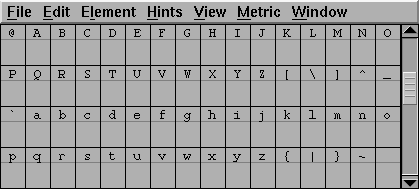
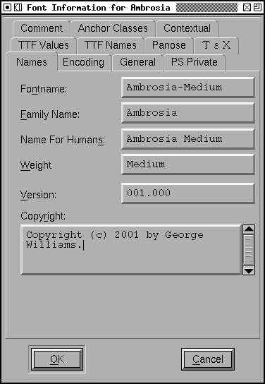
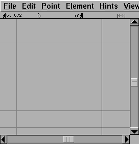
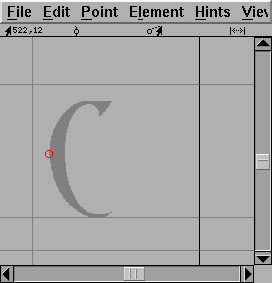

Tutorial


This tutorial is also available as a pdf
version. If you wish to follow along with the tutorial,
this bundle should provide you with the basic
files you need.
I shall not presume to teach aesthetics, I concentrate solely on the mechanics
here.
- Font Creation
- Creating a glyph (tracing outlines)
- Navigating to other glyphs
- On to the next glyph (consistent directions)
- Consistent serifs and stem widths
- Building accented glyphs
- Building a ligature
- Examining metrics
- Kerning
- Glyph variants
- Anchoring marks
- Conditional features
- Checking your font
- Bitmaps
- Generating it
- Font Families
- Final Summary
- Bitmap strikes
- Scripting Tutorial
- Notes on various scripts
NOBLEMAN: Now this is what I call workmanship. There is nothing on earth more exquisite than a bonny book, with well-placed columns of rich black writing in beautiful borders, and illuminated pictures cunningly inset. But nowadays, instead of looking at books, people read them. A book might as well be one of those orders for bacon and bran that you are scribbling.-- Saint Joan, Scene IV
George Bernard Shaw, 1924
Font creation
First create a new font with the New command in the
File menu (or by using the -new argument at startup).

Give the font a name with the Font
Info command from the Element menu. You use this
same command to set the copyright message and change the ascent and descent
(the sum of these two determines the size of the em square for the font,
and by convention is 1000 for postscript fonts, a power of two (often 2048
or 4096) for truetype fonts and 15,000 for Ikarus fonts). (Also if
you are planning on making a truetype font you might want to check the Quadratic
Splines checkbox to use the native truetype format. Editing is a little more
difficult in this mode though)

You may also wish to use Encoding->Reencode to change what characters are available in your font. FontForge generally creates new fonts with an ISO-8859-1, which contains (most of) the characters needed for Western Europe (the latin letters, some accented letters, digits, and symbols).
Creating a glyph
Once you have done that you are ready to start editing glyphs. Double click on the entry for "C" in the font view above. You should now have an empty Outline Glyph window:

The outline glyph window contains two palettes snuggled up on the left side of the window. The top palette contains a set of editing tools, and the bottom palette controls which layers of the window are visible or editable.
The foreground layer contains the outline that will become part of the font. The background layer can contain images or line drawings that help you draw this particular glyph. The guide layer contains lines that are useful on a font-wide basis (such as the x-height). Currently all layers are empty.
This window also shows the glyph's internal coordinate system with the x and y axes drawn in light grey. A line representing the glyph's advance width is drawn in black at the right edge of the window. FontForge assigns an advance width of one em (in PostScript that will usually be 1000 units) to the advance width of a new glyph.
Select the Import command from the File menu and import an image of the glyph you are creating. It will be scaled so that it is as high as the em-square.

Select the background layer as editable from the layers palette, move the mouse pointer to one of the edges of the image, hold down the shift key, depress and drag the corner until the image is a reasonable size, then move the pointer onto the dark part of the image, depress the mouse and drag until the image is properly positioned.

If you have downloaded the
autotrace program
you can invoke Element->AutoTrace to generate an outline
from the image. But if you have not you must add points yourself. Change
the active layer to be the foreground, and go to the tools palette and select
the round (or curve) point. Then move the pointer to the edge of the image
and add a point. I find that it is best to add points at places where the
curve is horizontal or vertical, at corners, or where the curve changes
inflection (A change of inflection occurs in a curve like "S" where the curve
changes from being open to the left to being open on the right. If you follow
these rules hinting will work better.

It is best to enter a curve in a clockwise fashion, so the next point should be added up at the top of the image on the flat section. Because the shape becomes flat here, a curve point is not appropriate, rather a tangent point is (this looks like a little triangle on the tools palette). A tangent point makes a nice transition from curves to straight lines because the curve leaves the point with the same slope the line had when it entered.

At the moment this "curve" doesn't match the image at all, don't worry about that we'll fix it later, and anyway it will change on its own as we continue. Note that we now have a control point attached to the tangent point (the little blue x). The next point needs to go where the image changes direction abruptly. Neither a curve nor a tangent point is appropriate here, instead we must use a corner point (one of the little squares on the tools palette).

As you see the old curve now follows the image a bit more closely. We continue adding points until we are ready to close the path.

Then we close the path just by adding a new point on top of the old start point

Now we must make the curve track the image more closely, to do this we must adjust the control points (the blue "x"es). To make all the control points visible select the pointer tool and double-click on the curve and then move the control points around until the curve looks right.

Finally we set width. Again with the pointer tool, move the mouse to the width line on the right edge of the screen, depress and drag the line back to a reasonable location.

And we are done with this glyph.
If you are mathematically inclined you may be interested in the coordinates that fontforge shows in the upper left of the window. Generally you can draw glyphs quite happily without bothering about these, but for those who are interested here is some basic info:
- Each glyph has its own coordinate system.
- The vertical origin is the font's baseline (the line on which most latin letters rest)
- The horizontal origin is the place where drawing the glyph will commence. In the example above what gets drawn initially is empty space, that is fairly common, and that empty space (the distance from the origin to the left edge of the glyph) is called the left side bearing.
- The units of the coordinate system are determined by the em-size of the font. This is the sum of the font's ascent and descent. In the example above the font's ascent is 800 and descent is 200, and the ascent line (the one just above the top of the "C") is 800 units from the baseline, while the descent line is 200 units below.
- So a position of 282,408 (as above) means that the cursor is 282 units right of the horizontal origin and 408 units above the baseline (or halfway between baseline and ascent).